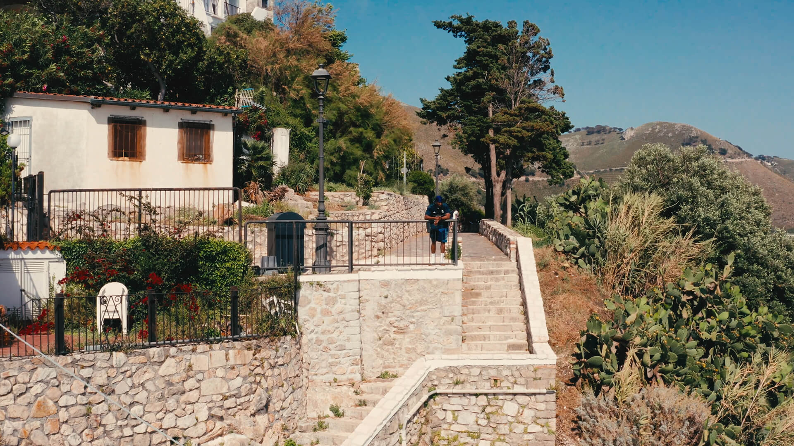
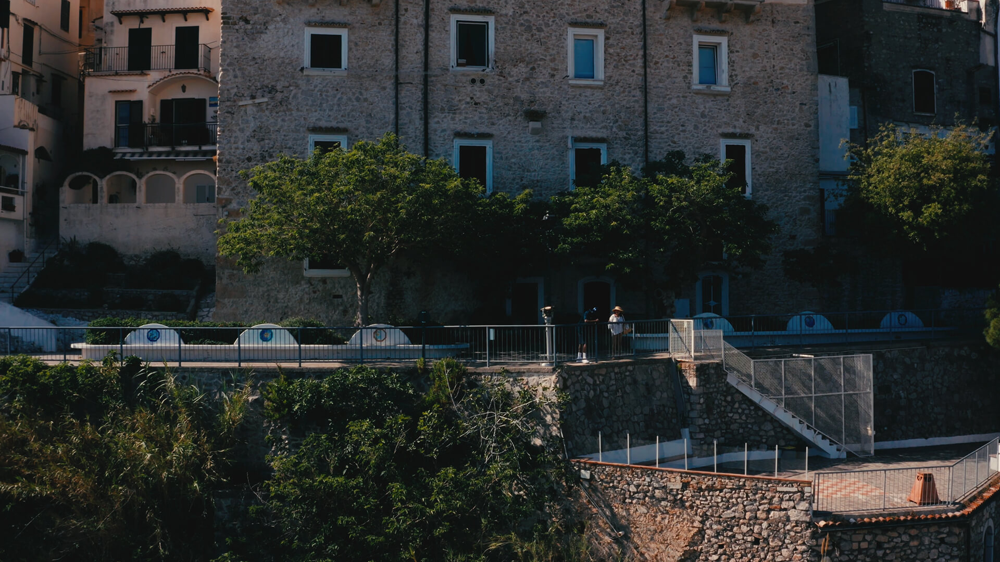

good Problems - Derin Falana
ABOUT THE PROJECT
A one-shot drone music video seamlessly following the rhythm and flow of Good Problems. With precise choreography and dynamic movement, the video captures the energy of Derin Falana’s performance in a continuous, uninterrupted take.
My Role: Aerial DP
My Role: Aerial DP
BEHIND THE SCENES

DELIVERABLES
1 x 3 minutes music video | Web [ 16:9 ]